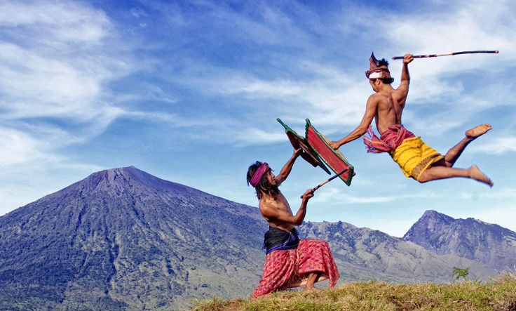
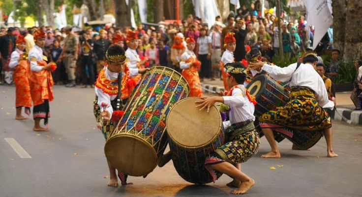
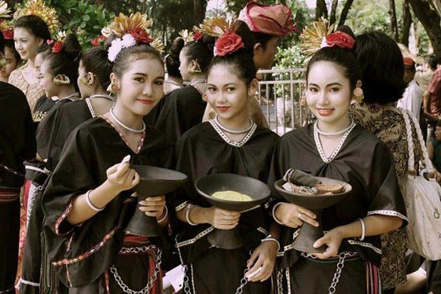

Keunikan budaya masyarakat Mataram

Peresean adalah tradisi budaya khas suku Sasak di Lombok berupa pertarungan adu ketangkasan dengan rotan dan perisai kulit, yang bukan sekadar hiburan tetapi juga sarat nilai spiritual, sosial, dan sejarah.

Gendang Beleq adalah kesenian tradisional khas suku Sasak di Lombok yang menampilkan permainan musik dengan gendang berukuran besar. Kata beleq sendiri berarti "besar," sehingga alat musik ini memang lebih besar dibanding gendang biasa.

Baju adat Sasak adalah pakaian tradisional masyarakat Lombok yang mencerminkan identitas budaya suku Sasak dengan ciri khas kain tenun ikat berwarna gelap. Untuk pria biasanya terdiri dari sapuk (ikat kepala), baju lengan panjang, dan sarung songket, sedangkan wanita mengenakan kebaya sederhana dengan kain songket serta hiasan rambut berupa sanggul atau bunga. Busana ini tidak hanya dipakai dalam upacara adat dan pernikahan, tetapi juga menjadi simbol kesederhanaan, keanggunan, dan kebanggaan masyarakat Sasak yang terus dilestarikan hingga kini.